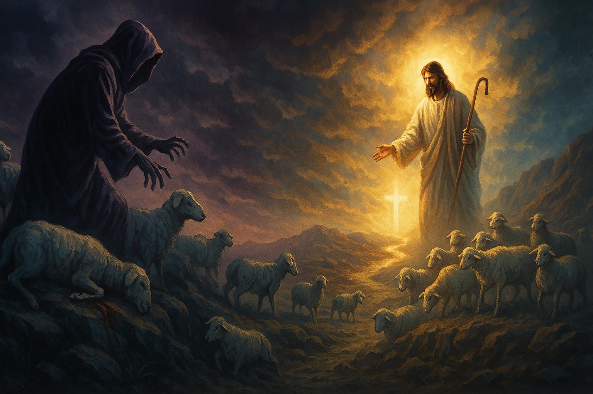
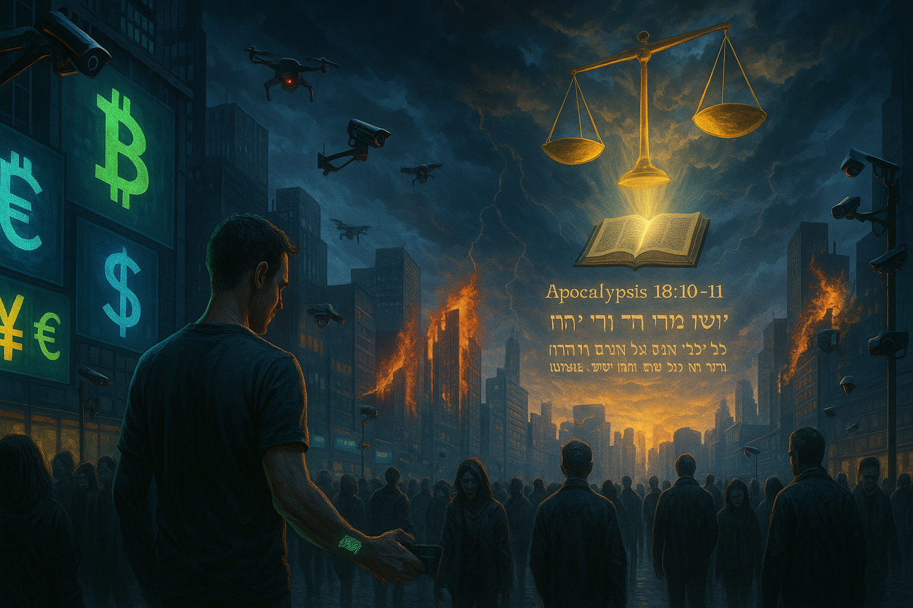

Ministerio
"La Gloria es del Señor"
Mantente informado sobre los acontecimientos mundiales desde una perspectiva bíblica y escatológica. Eventos actuales analizados a la luz de las profecías bíblicas.
Medios confiables que reportan desde una perspectiva bíblica sobre los acontecimientos mundiales relacionados con la escatología y el fin de los tiempos.
Noticias cristianas globales con análisis profundo de eventos mundiales desde una perspectiva bíblica. Cobertura de Israel, profecías y temas de fe.
Visitar SitioOrganización dedicada a servir a cristianos perseguidos en todo el mundo. Reportes actualizados sobre la iglesia perseguida y los signos proféticos del fin.
Visitar SitioPortal de noticias cristianas que cubre eventos proféticos, persecución, avivamientos y tendencias mundiales desde una óptica escatológica.
Visitar SitioNoticias actuales sobre la iglesia global, eventos proféticos y análisis escatológico de acontecimientos mundiales desde un enfoque evangélico conservador.
Visitar SitioMedio cristiano que ofrece análisis bíblico de noticias actuales, con énfasis en profecías y señales de los tiempos desde una perspectiva evangélica.
Visitar SitioPortal argentino de noticias cristianas que reporta sobre eventos mundiales y su relación con las profecías bíblicas del fin de los tiempos.
Visitar SitioRevista cristiana moderna que analiza eventos contemporáneos a la luz de la escatología bíblica y la segunda venida de Cristo (versión traducida).
Visitar SitioSitio especializado en reportar sobre la persecución cristiana global, una señal prominente de los últimos tiempos según las profecías bíblicas (versión traducida).
Visitar SitioPortal completo de noticias cristianas que interpreta eventos mundiales a la luz de las profecías escatológicas y el retorno de Cristo.
Visitar SitioInterpretación de eventos actuales a la luz de las profecías bíblicas sobre el fin de los tiempos.

Los recientes acontecimientos en Jerusalén revelan el cumplimiento progresivo de profecías mesiánicas. Analizamos estos eventos a la luz de Zacarías 12 y su conexión con la segunda venida de Cristo.
Leer análisis completoEl incremento global de la persecución cristiana confirma las palabras de Jesús en Mateo 24. Examinamos las estadísticas actuales y su relación con las profecías sobre la gran tribulación.
Leer análisis completoLas nuevas tecnologías de identificación y pago sin contacto plantean interrogantes sobre la profecía de Apocalipsis 13. Analizamos estos desarrollos desde una perspectiva bíblica equilibrada.
Leer análisis completoMovimientos de despertar espiritual en diversas naciones sugieren el cumplimiento de Joel 2:28-32. Exploramos estos avivamientos y su significado escatológico para la iglesia actual.
Leer análisis completoLos recientes avances en los preparativos para la reconstrucción del Templo en Jerusalén son analizados a la luz de las profecías de Daniel, Ezequiel y Apocalipsis.
Leer análisis completo
Las turbulencias económicas recientes y los movimientos hacia un sistema financiero unificado sugieren posibles escenarios relacionados con las profecías de Apocalipsis 13 y 18.
Leer análisis completo"Oí, pero no entendí. Y dije: Señor mío, ¿cuál será el fin de estas cosas? El respondió: Anda, Daniel, pues estas palabras están cerradas y selladas hasta el tiempo del fin. Muchos serán limpios, y emblanquecidos y purificados; los impíos procederán impíamente, y ninguno de los impíos entenderá, pero los entendidos comprenderán."
Daniel 12:8-10